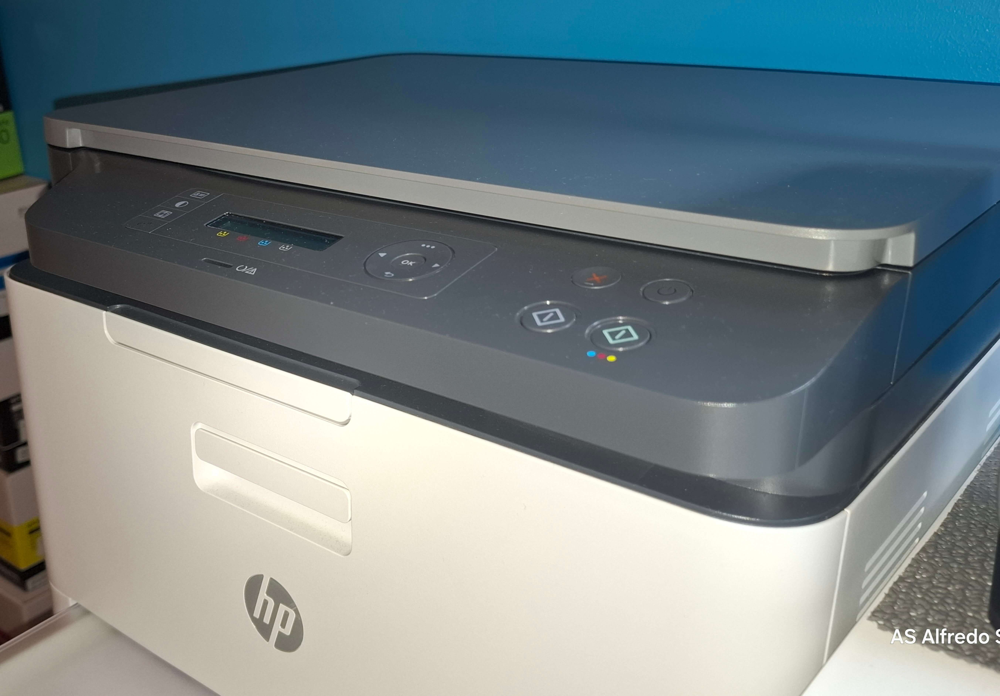
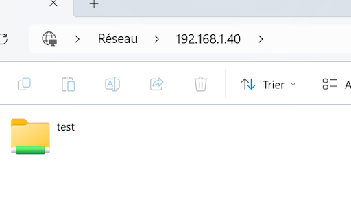
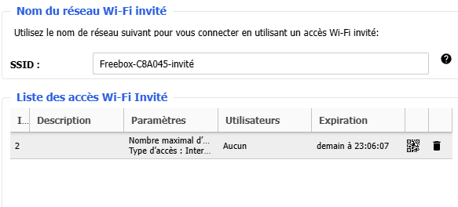

<!-- =====================================================
  ÉTAPE 1 — Colle ce CSS dans ton <style> avant </style>
===================================================== -->
<style>
#projet-perso {
  max-width: 100%;
  background: var(--bg-alt);
  border-top: 1px solid var(--border);
  border-bottom: 1px solid var(--border);
  padding: 8rem 0;
  position: relative;
  z-index: 10;
  transition: background 0.4s;
}

.pp-schema {
  display: flex;
  align-items: center;
  justify-content: center;
  gap: 1.2rem;
  flex-wrap: wrap;
  padding: 2rem 2.5rem;
  border-radius: 20px;
  border: 1px solid rgba(79,142,247,0.2);
  background: var(--bg-card);
  margin-bottom: 4rem;
}
.pp-node { text-align: center; }
.pp-node-ico   { font-size: 1.8rem; }
.pp-node-label { font-size: 0.6rem; color: var(--text3); font-family: 'JetBrains Mono', monospace; text-transform: uppercase; margin-top: 0.3rem; letter-spacing: 0.08em; }
.pp-node-sub   { font-size: 0.55rem; font-family: 'JetBrains Mono', monospace; }
.pp-arrow      { color: var(--border2); font-size: 1.1rem; user-select: none; }
.pp-arrow-red  { color: rgba(239,68,68,0.4); font-size: 1.1rem; user-select: none; }

.pp-cards { display: flex; flex-direction: column; gap: 2rem; }

.pp-card {
  background: var(--bg-card);
  border: 1px solid var(--border);
  border-radius: 20px;
  overflow: hidden;
  transition: border-color 0.3s, box-shadow 0.3s;
}
.pp-card:hover {
  border-color: rgba(79,142,247,0.3);
  box-shadow: 0 8px 40px rgba(0,0,0,0.2);
}

.pp-card-head {
  display: flex; align-items: center; gap: 1.5rem;
  padding: 1.8rem 2rem;
  border-bottom: 1px solid var(--border);
}
.pp-card-ico {
  width: 54px; height: 54px; border-radius: 50%;
  display: flex; align-items: center; justify-content: center;
  font-size: 1.4rem; flex-shrink: 0;
  border: 1px solid var(--border2); background: var(--skill-bg);
}
.pp-card-info { flex: 1; }
.pp-card-title { font-family: 'Cormorant Garamond', serif; font-size: 1.4rem; font-weight: 700; color: var(--white); line-height: 1.2; margin-bottom: 0.25rem; }
.pp-card-sub   { font-size: 0.65rem; color: var(--text3); font-family: 'JetBrains Mono', monospace; letter-spacing: 0.1em; text-transform: uppercase; }
.pp-card-pills { display: flex; gap: 0.4rem; flex-wrap: wrap; margin-top: 0.6rem; }

.pp-card-body  { display: grid; grid-template-columns: 1fr 1fr; }

.pp-card-photo {
  border-right: 1px solid var(--border);
  overflow: hidden; min-height: 230px;
  background: var(--bg-alt);
}
.pp-card-photo img { width: 100%; height: 100%; object-fit: cover; display: block; transition: transform 0.4s; }
.pp-card-photo:hover img { transform: scale(1.03); }

.pp-card-details { padding: 1.5rem 1.8rem; display: flex; flex-direction: column; gap: 0.55rem; justify-content: center; }

.pp-item {
  display: flex; align-items: flex-start; gap: 0.75rem;
  font-size: 0.86rem; color: var(--text2); line-height: 1.6;
  padding: 0.5rem 0.75rem; border-radius: 8px;
  background: var(--skill-bg); border: 1px solid var(--border);
  font-weight: 300; transition: background 0.2s, border-color 0.2s;
}
.pp-item:hover { background: var(--badge-bg); border-color: rgba(79,142,247,0.25); }
.pp-item-ico { flex-shrink: 0; font-size: 0.75rem; margin-top: 3px; }

@media (max-width: 768px) {
  .pp-card-body { grid-template-columns: 1fr; }
  .pp-card-photo { border-right: none; border-bottom: 1px solid var(--border); min-height: 180px; }
}
</style>


<!-- =====================================================
  ÉTAPE 2 — Colle cette section dans ton HTML
  là où tu veux le projet perso
===================================================== -->

<section id="projet-perso">
  <div class="f-inner">

    <div style="text-align:center; margin-bottom:4.5rem;">
      <div class="eyebrow reveal" style="margin:0 auto 1.5rem;">Projet Personnel</div>
      <h2 class="reveal" style="margin-bottom:1.2rem;">Réseau <em>Domestique</em></h2>
      <p class="reveal" style="max-width:700px;margin:0 auto;color:var(--text2);font-size:0.97rem;line-height:1.8;font-weight:300;">
        Mise en place d'un réseau maison complet : connexion filaire des PC et de l'imprimante, partage de fichiers entre machines et réseau Wi-Fi invité isolé avec expiration automatique à 24h.
      </p>
    </div>

    <!-- Schéma réseau -->
    <div class="pp-schema reveal">
      <div class="pp-node">
        <div class="pp-node-ico">🖥️</div>
        <div class="pp-node-label">PC Fixe 1</div>
        <div class="pp-node-sub" style="color:var(--blue2);">RJ45</div>
      </div>
      <div class="pp-arrow">──</div>
      <div class="pp-node">
        <div class="pp-node-ico">🖥️</div>
        <div class="pp-node-label">PC Fixe 2</div>
        <div class="pp-node-sub" style="color:var(--blue2);">RJ45</div>
      </div>
      <div class="pp-arrow">──</div>
      <div class="pp-node" style="position:relative;">
        <div style="position:absolute;top:-4px;right:-4px;width:9px;height:9px;border-radius:50%;background:var(--teal);box-shadow:0 0 8px var(--teal);"></div>
        <div class="pp-node-ico">📡</div>
        <div class="pp-node-label" style="color:var(--blue2);font-weight:600;">Box / Routeur</div>
      </div>
      <div class="pp-arrow">──</div>
      <div class="pp-node">
        <div class="pp-node-ico">🖨️</div>
        <div class="pp-node-label">Imprimante</div>
        <div class="pp-node-sub" style="color:var(--blue2);">RJ45</div>
      </div>
      <div class="pp-arrow">╌╌</div>
      <div class="pp-node">
        <div class="pp-node-ico">💻</div>
        <div class="pp-node-label">PC Portables</div>
        <div class="pp-node-sub" style="color:var(--teal);">Wi-Fi</div>
      </div>
      <div class="pp-arrow-red">╌╌</div>
      <div class="pp-node" style="opacity:0.8;">
        <div class="pp-node-ico">📱</div>
        <div class="pp-node-label" style="color:#ef4444;">Réseau Invité</div>
        <div class="pp-node-sub" style="color:var(--text3);">Isolé · 24h</div>
      </div>
    </div>

    <div class="pp-cards">

      <!-- ══ ÉTAPE 1 ══ -->
      <div class="pp-card reveal">
        <div class="pp-card-head">
          <div class="pp-card-ico" style="border-color:rgba(79,142,247,0.4);">🔌</div>
          <div class="pp-card-info">
            <div class="pp-card-title">Connexion des 2 PC fixe &amp; de l'imprimante sur la box</div>
            <div class="pp-card-sub">Câblage RJ45 · Configuration réseau · Pilotes imprimante</div>
            <div class="pp-card-pills">
              <span class="pill pill-blue">Ethernet</span>
              <span class="pill pill-blue">TCP/IP</span>
              <span class="pill pill-grey">Wi-Fi</span>
            </div>
          </div>
        </div>
        <div class="pp-card-body">
          <!-- 📸 Remplace src par le chemin de ta photo -->
          <div class="pp-card-photo"></div>
          <div class="pp-card-details">
            <div class="pp-item"><span class="pp-item-ico" style="color:var(--blue2);">▶</span><span>Connexion des 2 PC fixes à la box via câbles RJ45 pour une liaison filaire stable</span></div>
            <div class="pp-item"><span class="pp-item-ico" style="color:var(--blue2);">▶</span><span>Connexion de l'imprimante directement à la box via RJ45 — accessible sur tout le réseau</span></div>
            <div class="pp-item"><span class="pp-item-ico" style="color:var(--blue2);">▶</span><span>Installation des pilotes de l'imprimante réseau sur chaque PC fixe et portable Wi-Fi</span></div>
            <div class="pp-item"><span class="pp-item-ico" style="color:var(--blue2);">▶</span><span>Vérification que tous les appareils obtiennent une adresse IP via le DHCP de la box</span></div>
            <div class="pp-item"><span class="pp-item-ico" style="color:var(--blue2);">▶</span><span>Test d'impression depuis un PC portable en Wi-Fi — impression réseau fonctionnelle</span></div>
          </div>
        </div>
      </div>

      <!-- ══ ÉTAPE 2 ══ -->
      <div class="pp-card reveal reveal-delay-1">
        <div class="pp-card-head">
          <div class="pp-card-ico" style="border-color:rgba(45,212,191,0.4);">📁</div>
          <div class="pp-card-info">
            <div class="pp-card-title">Partage de fichiers entre PC via un utilisateur dédié</div>
            <div class="pp-card-sub">Compte local · Dossier partagé · Sans application tierce</div>
            <div class="pp-card-pills">
              <span class="pill pill-teal">Windows</span>
              <span class="pill pill-teal">SMB</span>
              <span class="pill pill-grey">Permissions</span>
            </div>
          </div>
        </div>
        <div class="pp-card-body">
          <!-- 📸 Remplace src par le chemin de ta photo -->
          <div class="pp-card-photo"></div>
          <div class="pp-card-details">
            <div class="pp-item"><span class="pp-item-ico" style="color:var(--teal);">▶</span><span>Création d'un compte utilisateur Windows dédié au partage sur le PC principal</span></div>
            <div class="pp-item"><span class="pp-item-ico" style="color:var(--teal);">▶</span><span>Configuration d'un dossier partagé avec les permissions lecture/écriture pour cet utilisateur</span></div>
            <div class="pp-item"><span class="pp-item-ico" style="color:var(--teal);">▶</span><span>Activation du partage réseau et de la découverte de réseau dans les paramètres Windows</span></div>
            <div class="pp-item"><span class="pp-item-ico" style="color:var(--teal);">▶</span><span>Accès au dossier depuis le second PC via l'explorateur (\\NomPC\Partage)</span></div>
            <div class="pp-item"><span class="pp-item-ico" style="color:var(--teal);">▶</span><span>Transfert de fichiers entre les deux PC sans WeTransfer, clé USB ni application tierce</span></div>
          </div>
        </div>
      </div>

      <!-- ══ ÉTAPE 3 ══ -->
      <div class="pp-card reveal reveal-delay-2">
        <div class="pp-card-head">
          <div class="pp-card-ico" style="border-color:rgba(239,68,68,0.4);">🔒</div>
          <div class="pp-card-info">
            <div class="pp-card-title">Réseau Wi-Fi invité isolé avec expiration automatique 24h</div>
            <div class="pp-card-sub">Passerelle séparée · IP dédiée · Isolation totale · Timer 24h</div>
            <div class="pp-card-pills">
              <span class="pill" style="background:rgba(239,68,68,0.1);color:#ef4444;border:1px solid rgba(239,68,68,0.3);">Sécurité</span>
              <span class="pill pill-grey">DHCP isolé</span>
              <span class="pill pill-grey">24h auto</span>
            </div>
          </div>
        </div>
        <div class="pp-card-body">
          <!-- 📸 Remplace src par le chemin de ta photo -->
          <div class="pp-card-photo"></div>
          <div class="pp-card-details">
            <div class="pp-item"><span class="pp-item-ico" style="color:#ef4444;">▶</span><span>Activation du réseau Wi-Fi invité depuis l'interface d'administration de la box</span></div>
            <div class="pp-item"><span class="pp-item-ico" style="color:#ef4444;">▶</span><span>Passerelle et plage IP différentes du réseau principal (ex : 192.168.2.x au lieu de 192.168.1.x)</span></div>
            <div class="pp-item"><span class="pp-item-ico" style="color:#ef4444;">▶</span><span>Isolation totale : les invités n'ont aucun accès aux PC, à l'imprimante ni aux fichiers partagés</span></div>
            <div class="pp-item"><span class="pp-item-ico" style="color:#ef4444;">▶</span><span>Mot de passe Wi-Fi invité dédié pour contrôler les connexions</span></div>
            <div class="pp-item"><span class="pp-item-ico" style="color:#ef4444;">▶</span><span>Expiration automatique à 24h : déconnexion automatique des appareils sans intervention manuelle</span></div>
          </div>
        </div>
      </div>

    </div>
  </div>
</section>